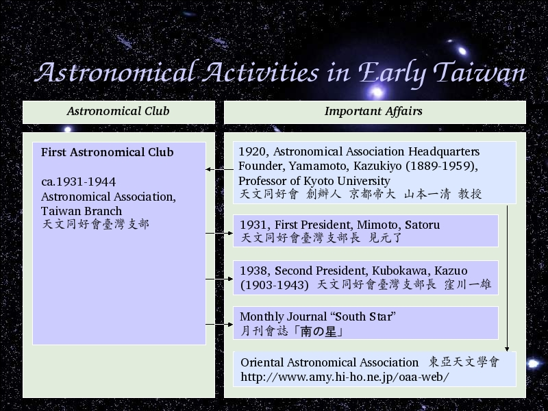

Voice Over:
OK, after sad story, we talk about astronomical activities in taiwan.
First we talk about astronomical clubs.
The first astronomical club was Astronomical Association, Taiwan Branch.
The headquarters of Astronomical Association is in Kyoto, the founder is Yamamoto, Kazukiyo, professor of Kyoto University.
Astronomical Association now change the name to Oriental Astronomical Association.
Astronomical Association Taiwan Branch probably built in 1931. I can not find the exactly year.
I tried to contact with Oriental Astronomical Association if they have any documents record the year Astronomical Association Taiwan Branch built.
But unfortunately, no answered.
So probably the first president is Mitoto Aatoru in 1931.
The second president is Kubokawa, Kazuo.
And their monthly journal is "South Star"